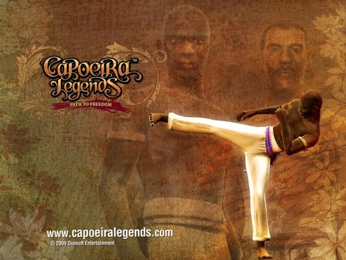

Компьютерная игра «Capoeira Legends: Path to Freedom»

Path to Freedom — первая часть из серии игр «Capoeira Legends», где вам предстоит поиграть за беглого раба, капоэйриста Gunga Za. С ним вы поборитесь за свободу цветного населения и справедливость в Бразии в конце 19-го века. Первая часть трилогии победила в 4-х номинациях местной игровой премии, в том числе «Лучшая национальная игра».
Жанр: приключенческий экшн от третьего лица.
Игра вышла в Бразилии в начале 2009 года, сейчас она доступна в интернет-магазинах, интерфейс доступен на английском и португальском языках.
Скачать демонстрационную версию игры можно здесь.
Видео: промо (португальский), промо (английский), геймплей.
Скрины: